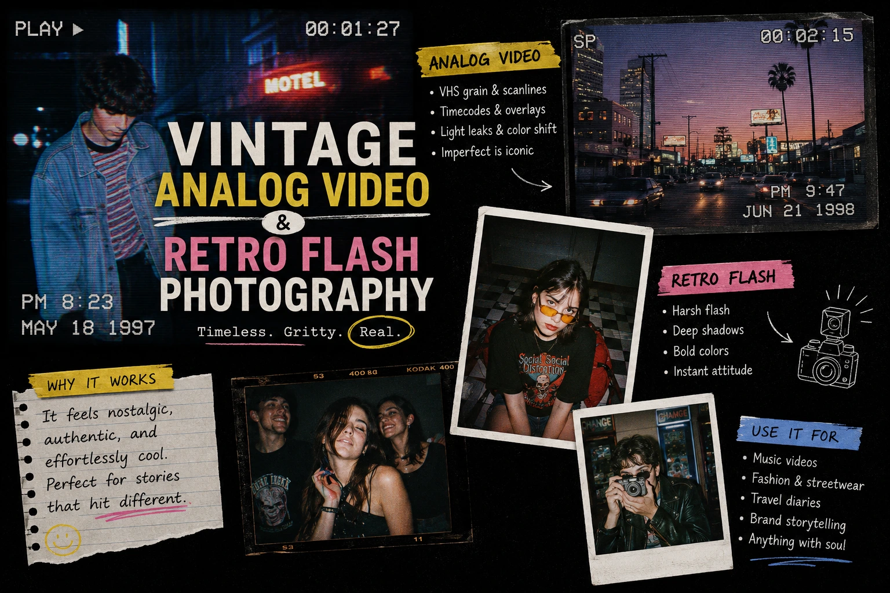
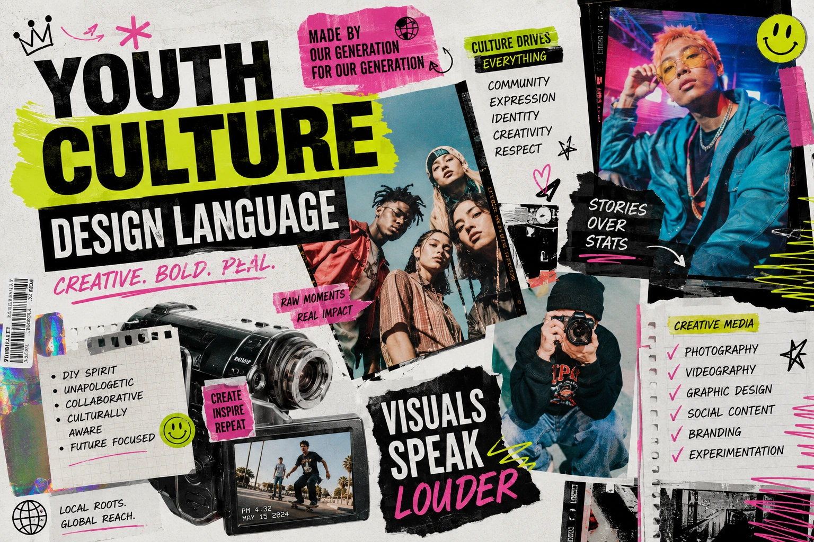

How to Shoot Content Tailored to Gen-Z Social Media Subcultures
Why Generic Brand Content Fails to Reach Gen-Z
Gen-Z does not consume social media the way previous generations did — passively, across a broad and varied feed of content from many different sources. Gen-Z is sorted. The algorithmic architecture of Instagram, YouTube, and the platforms that have defined this generation's media consumption has organised their feeds into increasingly specific cultural communities — each with its own visual language, its own content conventions, its own in-group references, and its own sophisticated ability to identify content that belongs to the community and content that is trying to appeal to the community from the outside.
This is the fundamental challenge of Gen-Z marketing visual design: content that is produced for a broad audience communicates immediately to the Gen-Z viewer that it is not for their specific community — it is for everyone, which means it is not specifically for them. And content that is not specifically for them is scrolled past without engagement, regardless of the production quality, the messaging, or the offer behind it.
Hyper-niche brand aesthetics — the production of visual content that is precisely calibrated to the aesthetic conventions of a specific Gen-Z subculture — are the solution. A brand whose content looks and feels like it belongs to a specific cultural community is received as culturally fluent rather than culturally alien. And cultural fluency, for Gen-Z audiences, is the prerequisite for any commercial relationship with the brand.
Understanding Gen-Z Social Media Subcultures: The Aesthetic Landscape
Target audience visual alignment for Gen-Z begins with genuine understanding of the specific subcultures that define the brand's target segment — because "Gen-Z" is not a monolithic aesthetic audience. Gen-Z is a collection of distinct cultural communities, each with its own visual conventions, each requiring its own production approach.
The specific subcultures most commercially relevant for Indian brands targeting Gen-Z:
- The vintage and thrift aesthetic community. Built around archive photography, film photography, VHS and Super 8 aesthetics, and the visual language of the 1990s and early 2000s. Characterised by retro flash product photography, desaturated or colour-shifted film tones, candid unposed imagery, and an explicit rejection of the clean, over-produced aesthetic of mainstream commercial content. For Indian brands in fashion, streetwear, and lifestyle categories, this is one of the highest-growth Gen-Z communities with strong purchase intent within their aesthetic identity.
- The dark academia and literary aesthetic community. Built around the visual language of old universities, leather-bound books, candles, classical architecture, and a specific muted, warm-dark colour palette. For Indian brands in stationery, lifestyle goods, coffee culture, and fashion, this community represents a high-engagement audience with strong visual consistency requirements.
- The indie music and alternative culture community. Built around concert photography aesthetics, artist-made visual content, grain-heavy film photography, and design language that references independent music poster and zine culture. For Indian brands targeting urban creative communities — particularly in cities like Chennai, Bengaluru, Mumbai, and the growing alternative culture scene in Madurai — this community rewards genuine cultural intelligence over commercial polish.
- The hyperpop and Y2K nostalgia community. Built around the visual language of early 2000s internet aesthetics — low-resolution imagery, bright saturated colours, specific typography associated with MSN Messenger and early social media, and a self-consciously ironic embrace of the visual kitsch of early digital culture. For Indian beauty, fashion, and music brands targeting the 18 to 24 demographic, this is one of the most active and commercially engaged Gen-Z visual communities in 2026.
- The sport and fitness subculture community. Built around the visual language of training photography, high-contrast sports imagery, minimal design, and the authentic documentation of physical performance rather than aspirational lifestyle staging. For Indian brands in sportswear, nutrition, and fitness equipment, this community responds to specific production qualities: real sweat, real effort, real environments — not studio perfection.
Cultural Fluency Over Production Value
Gen-Z subcultures reward content that demonstrates genuine knowledge of their visual conventions — even when that knowledge produces "imperfect" results — over technically polished content that is aesthetically misaligned. A well-executed retro flash photograph outperforms a technically perfect studio shot in the vintage community, regardless of production cost.
Community Over Broadcast
Gen-Z subculture content performs through community sharing — the organic distribution of content that members identify as belonging to their community's visual language. A single piece of content that earns genuine sharing within a subculture reaches more relevant audience than paid distribution to a broader demographic.
Reference Depth Over Surface Aesthetics
The most effective Gen-Z subculture content demonstrates knowledge of the specific cultural references that define the community — not just the surface aesthetic. A brand that understands why the vintage community values Super 8 aesthetics, not just what they look like, produces content that earns genuine community recognition.
Consistency Over Campaign
Gen-Z subculture community membership is built through consistent, sustained visual identity — not through occasional campaign content. A brand that maintains its chosen subculture aesthetic consistently across its social media presence is recognised as a community participant; one that deploys it intermittently is recognised as a brand campaign.

Vintage Analog Video Styling: Production Techniques
Vintage analog video styling is the most technically demanding of the Gen-Z aesthetic approaches — because the authentic version of the analog aesthetic is produced by specific physical equipment with specific physical limitations, and the simulation of those limitations in digital post-production requires significant technical knowledge to achieve convincingly.
The production approaches for vintage analog video styling, from most to least authentic:
- Actual analog capture: the authentic approach. Shooting on genuine analog video equipment — a Mini-DV camcorder for the late-1990s digital video aesthetic, a VHS camcorder for the 1980s to early 1990s aesthetic, or a Super 8 film camera for the film-grain, warm-tone, 1970s-inflected aesthetic — produces authentic results that digital post-production effects cannot fully replicate. The specific qualities of analog capture — the genuine interlacing, the authentic colour bleed, the real scan line structure — are immediately recognisable to the Gen-Z vintage community as genuine rather than simulated. For brands investing in a vintage aesthetic as a sustained identity rather than a campaign moment, actual analog capture on vintage equipment is the most credible production approach.
- Film stock photography for the still image library. Shooting on actual 35mm film — with the specific grain structure, colour rendering, and highlight rolloff of physical film emulsions — produces still image content with the authentic film aesthetic that digital film simulation cannot fully replicate. For Indian brands in fashion, food, and lifestyle, 35mm film photography is accessible, modestly priced for smaller production sessions, and immediately recognisable to the vintage community as genuine film rather than digital simulation.
- Digital capture with calibrated analog post-production effects. For production contexts where actual analog capture is not feasible, digital footage with carefully calibrated post-production effects can approximate the analog aesthetic convincingly when executed with precision. The specific effects required: interlace simulation (alternating field rendering or combing effect at horizontal edges), scan line overlay at 5 to 15% opacity, chromatic aberration at the frame edges with RGB channel separation, colour grading with specific warmth and reduced colour saturation characteristic of the target format, VHS colour dropout simulated with occasional horizontal colour glitches, and film grain or video noise applied at the appropriate scale for the target format's resolution. Applied incorrectly or excessively, these effects produce a caricature of the analog aesthetic rather than a convincing approximation; applied with restraint and precision, they produce content that reads as credibly vintage to the community audience.
Retro Flash Product Photography: The Technique and the Community
Retro flash product photography replicates the specific visual character of consumer point-and-shoot photography — the harsh, direct, on-axis flash illumination of a 35mm compact camera, the colour rendering of consumer film emulsions, and the casual, unposed quality of personal snapshot photography rather than professional commercial photography.
The specific production techniques for retro flash product photography:
- On-camera direct flash at close range. The authentic flash aesthetic is produced by a camera-mounted or near-camera flash unit positioned close to the lens axis — not bounced, not diffused, not softened. This produces the specific flat, harsh illumination with minimal shadow that characterises point-and-shoot photography. The background falls to near-black at typical indoor distances due to the inverse square law of flash falloff, producing the characteristic dark background of snapshot photography.
- Film stock or film emulation colour treatment. The colour rendering of the retro flash aesthetic is inseparable from the specific colour characteristics of consumer film — Fuji 400H, Kodak Gold 200, Kodak Ultramax — each with their own specific colour cast, saturation level, and highlight and shadow rendering. Applying film emulation in post-production to the flash-lit source photograph completes the retro flash aesthetic and determines which specific era of consumer photography it references.
- Subject-product proximity and casual framing. Point-and-shoot photography positions the subject close to the lens with a slightly wide angle of view — producing slight wide-angle distortion and a casual, intimate framing that differs from the deliberate, considered compositions of professional product photography. Maintaining this casual framing in retro flash product photography — imperfect centring, slight angles, products held rather than placed — is as important to the aesthetic as the flash illumination itself.
- Actual 35mm film as the highest-authenticity approach. As with analog video, actually shooting the product on a 35mm compact camera loaded with consumer film stock produces results that digital simulation cannot fully replicate — particularly the specific grain structure, colour rendering, and highlight rolloff that are chemically produced rather than digitally calculated. For brands building a sustained vintage community aesthetic, actual film photography in the retro flash style is the production investment that earns genuine community recognition.
Rapid-Cut Social Media Editing: The Rhythm of Gen-Z Attention
Rapid-cut social media editing is not simply fast editing — it is rhythmically precise editing that synchronises visual cuts with audio events at a speed calibrated to the consumption pattern of Gen-Z social media audiences. The distinction matters: fast editing that is not rhythmically precise produces visual chaos; rapid-cut editing that is rhythmically precise produces the kinetic engagement that the Gen-Z attention system responds to positively.
The specific technical approach for rapid-cut social media editing for Gen-Z content:
Source Footage Requirements
- Multiple distinct visual setups — a rapid-cut sequence with 20 cuts requires at minimum 8 to 10 genuinely different visual environments or perspectives
- Variety of shot scales — close-up, medium, wide — to enable meaningful visual change at each cut rather than just angle variation
- Clean in and out points for every clip — each setup shot long enough to provide options at the cut-in and cut-out point
- Natural motion within shots — movement that is mid-arc at the cut point creates better motion-matched edits than static shots cut mid-frame
Beat-Precision Editing
- Every cut falls on a specific audio event — downbeat, accent beat, or sound effect peak
- Cut density increases toward the end of the sequence — builds kinetic momentum toward the closing moment
- Occasional held frame or deliberate breath between rapid sequences — contrast prevents the audience from habituating to the rapid pace
- Audio-visual synchronisation for text and graphic overlays — text appears precisely on audio accent, not between beats
Subculture-Specific Pacing
- Vintage aesthetic content: slower rhythm, 1.5 to 3 second cuts, analogue video transitions — the kinetic speed contradicts the aesthetic
- Hyperpop and Y2K content: maximum velocity, 0.3 to 0.8 second cuts, chaotic energy that mirrors the aesthetic's visual language
- Indie and alternative content: variable rhythm, deliberate pauses, editorial pacing that feels crafted rather than optimised
- Sport and fitness content: build from slower to faster cuts as the sequence develops — mirrors the arc of physical exertion

Youth Culture Design Language: The Typography and Colour Dimension
Youth culture design language extends beyond photography and video into the specific typography, colour, and graphic design conventions that each Gen-Z subculture has developed as its visual identity signals. Social media visual asset creation for Gen-Z that achieves genuine cultural fluency must apply these design conventions with the same precision as the photography and video aesthetics.
The typography and design conventions of the most commercially relevant Gen-Z subcultures for Indian brands:
- Vintage community design language: Serif typefaces with irregular or aged character, hand-stamped or typewriter-style typography, deliberately misregistered colour printing effects, zine-style layout with imperfect alignment, and a muted, faded colour palette that references the printing and reproduction limitations of physical media.
- Dark academia design language: Classical serif typography, illuminated manuscript reference borders and decorative elements, sepia and dark amber colour palettes, handwritten annotations layered over typeset text, and an overall visual density that communicates intellectual richness.
- Y2K and hyperpop design language: Display fonts associated with early digital interfaces — Impact, Comic Sans used ironically, early internet pixel fonts — bright and clashing colour combinations that reference early web design and mall aesthetics, metallic and holographic surface treatments, and a deliberately maximalist visual environment that rejects minimalist design conventions.
- Indie and alternative design language: Offset print aesthetics with visible riso-style colour registration irregularities, hand-drawn illustration elements, anti-corporate typography that references DIY poster-making, and a deliberately unpolished visual finish that communicates independence from commercial design conventions.
Creative Media Styling: The Production Session Approach
Creative media styling for Gen-Z subculture content requires a production session approach that differs from standard commercial content production — because the aesthetic outcome depends as much on the pre-production research and styling decisions as on the production execution itself.
The pre-production preparation for a Gen-Z subculture content session:
- Subculture deep research before any creative brief is written. Spend two to four hours immersed in the specific subculture's content feed — not studying it from the outside but consuming it as a member would. The accounts, the hashtags, the specific creators who define the community's visual standards. The outcome is a genuine understanding of what belongs and what does not — which informs every subsequent production decision with specificity that secondary research cannot provide.
- A reference board of specific content, not just aesthetic categories. The mood board for a Gen-Z subculture production session should be populated with actual content from the community — specific posts, specific creators, specific images — not general aesthetic references. "Film photography" is a general aesthetic reference; "the specific flash photography style of @specific_creator on Instagram, combined with the colour rendering of Kodak Ultramax 400 and this specific informal styling approach" is a production brief that can actually be executed.
- Prop and styling that communicates community membership, not external observation. The props and styling choices in a Gen-Z subculture content session should be selected by someone who is genuinely familiar with the community's object culture — the specific items that carry cultural meaning within the community. Props that are chosen for generic "aesthetic" appeal without understanding their specific cultural significance communicate that the brand is observing the community rather than participating in it.
- Cast from within the community where possible. Models, subjects, and on-camera talent for Gen-Z subculture content perform most authentically when they are genuine members of the community — because their body language, their styling choices, and their relationship to the aesthetic context are innate rather than directed. Casting from within the community also produces genuine community sharing behaviour — a community member who has appeared in brand content shares it with their community network, extending the content's reach into the community it is designed to reach.
Social Media Visual Asset Creation: The Platform-Specific Format Strategy
Social media visual asset creation for Gen-Z subculture content must be formatted for the specific platform where each subculture is most active — because the platform context shapes the content's reception as much as its aesthetic character.
- Instagram Reels: The primary platform for aesthetic community content. Vertical 9:16 format is non-negotiable. The vintage and indie communities post natively vertical content; horizontal content cropped to vertical immediately signals a non-native production approach. Trending audio within the subculture's audio ecosystem is as important as the visual aesthetic — community members recognise subculture-specific audio instantly.
- YouTube Shorts: Growing importance for Gen-Z subculture content with the advantage of cross-recommendation with long-form content. Particularly important for the dark academia, indie music, and art community subcultures where longer-form content is culturally valued. Horizontal 16:9 content reformatted to vertical performs less well than natively vertical content — plan vertical production from the outset.
- Instagram grid: The portfolio context where a brand's sustained aesthetic identity is most visible. A brand's grid is the first thing a community member evaluates when they visit the profile after encountering one piece of content — the consistency of aesthetic identity across the grid determines whether they follow. Single-piece content can earn attention; grid consistency earns follows.
- Pinterest: Underused for Gen-Z brand content in India, but highly active within the dark academia, vintage, and lifestyle aesthetic communities. Still image content from the subculture photography sessions, formatted for Pinterest's vertical format and keyword-tagged for community discoverability, provides long-term organic discovery that social media feed platforms cannot offer.
Conclusion
Gen-Z marketing visual design is not a simplified version of mainstream brand content produced with a younger aesthetic. It is a genuinely different creative discipline — one that requires authentic understanding of specific subculture visual conventions, precise production techniques that achieve credible aesthetic outcomes within those conventions, and consistent sustained deployment that communicates community participation rather than campaign opportunism.
Hyper-niche brand aesthetics that are executed with genuine cultural intelligence — vintage analog video styling that earns community recognition, retro flash product photography that belongs to the vintage aesthetic rather than mimicking it, rapid-cut social media editing that feels kinetically alive rather than mechanically fast, and youth culture design language applied with subculture specificity — are the social media visual asset creation investments that produce the genuine community engagement, sharing behaviour, and commercial conversion that generic brand content directed at "young people" cannot reach.
At The PhD Ads, we produce creative media styling and social media visual asset creation for Indian brands targeting Gen-Z communities — from vintage analog video production and retro flash photography to rapid-cut Reels editing and subculture-specific design, built on genuine research into the specific communities the content needs to reach.
Key Topics
Ready to Produce Content That Actually Belongs to Your Gen-Z Audience's World?
At The PhD Ads, we produce social media visual asset creation for Indian brands targeting Gen-Z subcultures — vintage analog video, retro flash photography, rapid-cut editing, and hyper-niche brand aesthetics grounded in genuine subculture research, built for brands ready to move from campaign content to community content.
Email: team@e2o.in